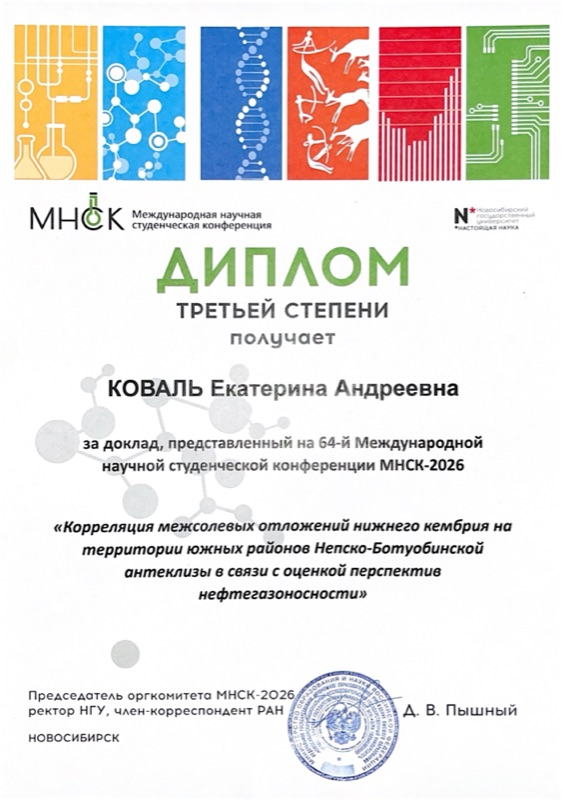
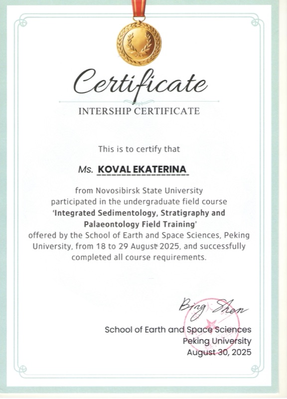

Ekaterina Koval · Geologist in trainingЕкатерина Коваль · геолог
Katie
KovalКатя
Коваль
I describe core, correlate well logs and map salt basins. Geology student at Novosibirsk State University, specialising in the geochemistry of oil and gas.
Описываю керн, коррелирую разрезы по ГИС и строю карты соленосных бассейнов. Студентка геолого-геофизического факультета НГУ, специализация — геохимия нефти и газа.
- Well
- Koval-1
- Interval
- 2023 → 2027
- Formation
- NSU · Geology
- Logged by
- E. Koval
- Скважина
- Коваль-1
- Интервал
- 2023 → 2027
- Свита
- НГУ · ГГФ
- Описала
- Е. Коваль
1840 – 1850 m · CAP ROCK1840 – 1850 м · ПОКРЫШКА
ProfileО себе
Research, field and laboratory experience in petroleum geology and sedimentology. Skilled in well-log correlation, structure and isopach mapping, core description and geological mapping. Interested in petroleum systems and the energy industry, with international academic experience.
Научный, полевой и лабораторный опыт в нефтегазовой геологии и седиментологии. Корреляция разрезов по данным ГИС, структурные карты и карты изопахит, описание керна, геологическое картирование. Интересуюсь нефтегазовыми системами и энергетикой; есть международный академический опыт.
Target horizon · Bachelor's thesisЦелевой горизонт · бакалаврская работа
Geological structure of the productive inter-salt horizons of the Lower Cambrian in the southern Nepa-Botuoba Anteclise, Siberian Platform
Геологическое строение продуктивных межсолевых горизонтов нижнего кембрия южных районов Непско-Ботуобинской антеклизы, Сибирская платформа
1850 – 1862 m · PAY ZONE1850 – 1862 м · ПРОДУКТИВНЫЙ ПЛАСТ
Box 1 — LaboratoryЯщик 1 — Лаборатория
KOVAL-1 · BOX 1КОВАЛЬ-1 · ЯЩИК 12025 → now2025 → н. в.
Sep 2025 — present · Novosibirsk
Trofimuk Institute of Petroleum Geology & Geophysics SB RAS
Research Assistant · Lab of Petroleum Geology of the Siberian Platform
- Well-log correlation of Lower Cambrian inter-salt deposits
- Core description, core + seismic integration
- Structure & isopach maps, cross-sections (Surfer, GisWell, Petrel, ArcGIS)
★ ISSC-2026 · 3rd-degree diploma ↓
Сентябрь 2025 — н. в. · Новосибирск
ИНГГ СО РАН им. А. А. Трофимука
Лаборант-исследователь · Лаборатория геологии нефти и газа Сибирской платформы
- Корреляция межсолевых отложений нижнего кембрия по данным ГИС
- Описание керна, увязка керна с сейсмическими данными
- Структурные карты, карты изопахит, геологические разрезы (Surfer, GisWell, Petrel, ArcGIS)
★ МНСК-2026 · диплом III степени ↓
July 2025 · Novosibirsk
Sobolev Institute of Geology & Mineralogy SB RAS
Core repository placement — described, organised and labelled core samples.
Июль 2025 · Новосибирск
ИГМ СО РАН им. В. С. Соболева
Практика в кернохранилище — описание, систематизация и маркировка образцов керна.
1862 m · OIL SHOW · REPORTED1862 м · НЕФТЕПРОЯВЛЕНИЕ · ДОКЛАД
Show report — ISSC-2026Проявление — МНСК-2026
Talk · Geology of Oil and Gas Fields
Correlation of Lower Cambrian inter-salt deposits in the southern Nepa-Botuoba Anteclise in connection with petroleum potential assessment
«Корреляция межсолевых отложений нижнего кембрия на территории южных районов Непско-Ботуобинской антеклизы в связи с оценкой перспектив нефтегазоносности»
Доклад · Геология месторождений нефти и газа
«Корреляция межсолевых отложений нижнего кембрия на территории южных районов Непско-Ботуобинской антеклизы в связи с оценкой перспектив нефтегазоносности»
3rd
degree
diplomaДиплом
III
степени
- Event
- 64th International Scientific Student Conference (ISSC-2026)
- Where
- Novosibirsk State University · 15–21 April 2026
- Scale
- ~3,000 participants, 49 sections
- Section
- Geology of Oil and Gas Fields
- Supervisor
- Andrey M. Fomin
- Событие
- 64-я Международная научная студенческая конференция (МНСК-2026)
- Где
- Новосибирский государственный университет · 15–21 апреля 2026
- Масштаб
- ~3000 участников, 49 секций
- Секция
- Геология месторождений нефти и газа
- Руководитель
- Фомин Андрей Михайлович
Published abstractKoval E.A. Correlation of Lower Cambrian inter-salt deposits in the southern Nepa-Botuoba Anteclise… // Geology: Proceedings of the 64th ISSC. Novosibirsk: NSU, 2026. P. 31. (In Russian.) · EDN NOZZDV · indexed in RSCI
Опубликованные тезисыКоваль Е.А. Корреляция межсолевых отложений нижнего кембрия на территории южных районов Непско-Ботуобинской антеклизы… // Геология: Материалы 64-й МНСК. Новосибирск: НГУ, 2026. С. 31. · EDN NOZZDV · РИНЦ
Abstract on eLibrary ↗Тезисы в eLibrary ↗
Diploma (PDF)Диплом (PDF)
Official results ↗Итоги секций ↗
ISSC website ↗Сайт МНСК ↗

Diploma · ISSC-2026Диплом · МНСК-2026
1862 – 1880 m · OUTCROP ANALOGUES1862 – 1880 м · ОБНАЖЕНИЯ-АНАЛОГИ
Box 2 — FieldЯщик 2 — Поле
KOVAL-1 · BOX 2КОВАЛЬ-1 · ЯЩИК 22024 → 2025
18–29 Aug 2025 · Beijing, China
Peking University
Integrated Sedimentology, Stratigraphy & Palaeontology Field Training · School of Earth and Space Sciences
- Described sedimentary sections and their lithology in the field
- Collected and described samples; kept field notebooks
- Worked in an international student team

Internship certificate ↗
18–29 августа 2025 · Пекин, Китай
Пекинский университет
Полевая практика по седиментологии, стратиграфии и палеонтологии · Школа наук о Земле и космосе
- Описание осадочных разрезов в полевых условиях, определение литологических характеристик пород
- Отбор и описание образцов, ведение полевого дневника
- Работа в международной студенческой команде
Сертификат ↗
Jun — Jul 2025 · Khakassia
Geological mapping field practice
Mapping, outcrop description, sampling, compass work.
Июнь — июль 2025 · Хакасия
Геолого-съёмочная практика
Геологическое картирование, описание обнажений, отбор проб, работа с компасом.
Jun — Jul 2024 · Altai Mountains
Research field practice
Field investigations, sampling, documentation.
Июнь — июль 2024 · Алтай
Исследовательская геологическая практика
Полевые исследования, сбор и описание образцов, документация.
1880 m · TD · TOOLSTRING1880 м · ЗАБОЙ · КОМПОНОВКА
ToolkitИнструменты
SubsurfaceWell-log correlation & interpretation, structure & isopach mapping, cross-sections, core description
FieldGeological mapping, sedimentology & stratigraphy, sampling, documentation
Lab (coursework)Thin-section microscopy, GC–MS, pyrolysis
SoftwarePetrel, Surfer, GisWell, ArcGIS, CorelDRAW, Excel
LanguagesRussian — native · English — B2
Soft skillsTeamwork, communication, adaptability, problem solving
НедраКорреляция и интерпретация ГИС, структурные карты и карты изопахит, геологические разрезы, описание керна
ПолеГеологическое картирование, седиментология и стратиграфия, отбор проб, полевая документация
Лаборатория (учебные курсы)Петрография шлифов, ГХ–МС, пиролиз
ПрограммыPetrel, Surfer, GisWell, ArcGIS, CorelDRAW, Excel
ЯзыкиРусский — родной · английский — B2
Личные качестваРабота в команде, коммуникабельность, адаптивность; готова к вахтовой работе и длительным выездам